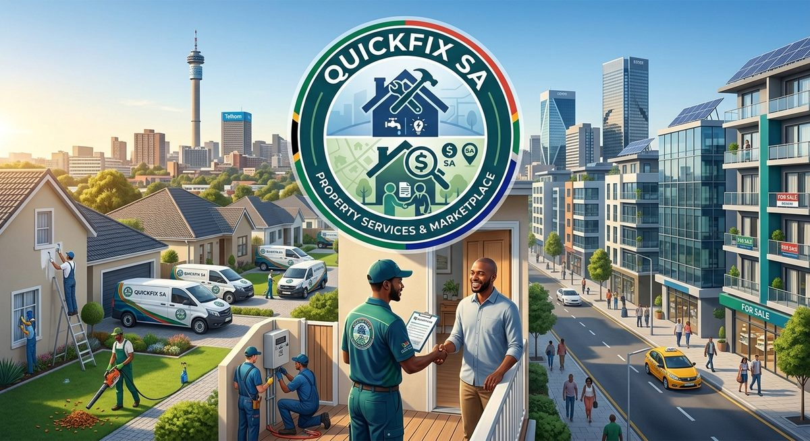

Property Services Made Simple
QuickFix SA helps people find properties and connect with reliable repair professionals.
Welcome to QuickFix SA
QuickFix SA is an online property services platform that makes it easier for people to find properties and access property maintenance services.
QuickFix SA offers a useful place to start whether you're searching for a new property or need assistance solving a problem in your current property.
What Can We Help You With?
Find a Property
Browse properties available for sale and search according to location, price and property type.
View PropertiesFind a Repair Professional
Find plumbers, electricians, appliance repairers, carpenters and other property professionals.
View ServicesWhy Choose QuickFix SA?
- Easy property searching
- Easy scheduling of repairs
- Service provider ratings and reviews
- Property enquiries and viewing requests